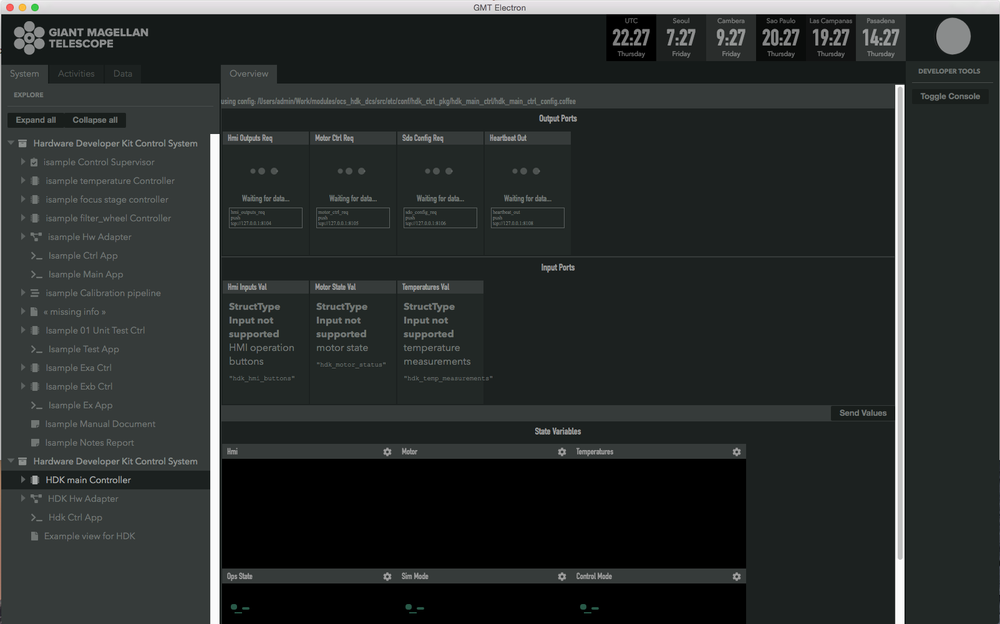
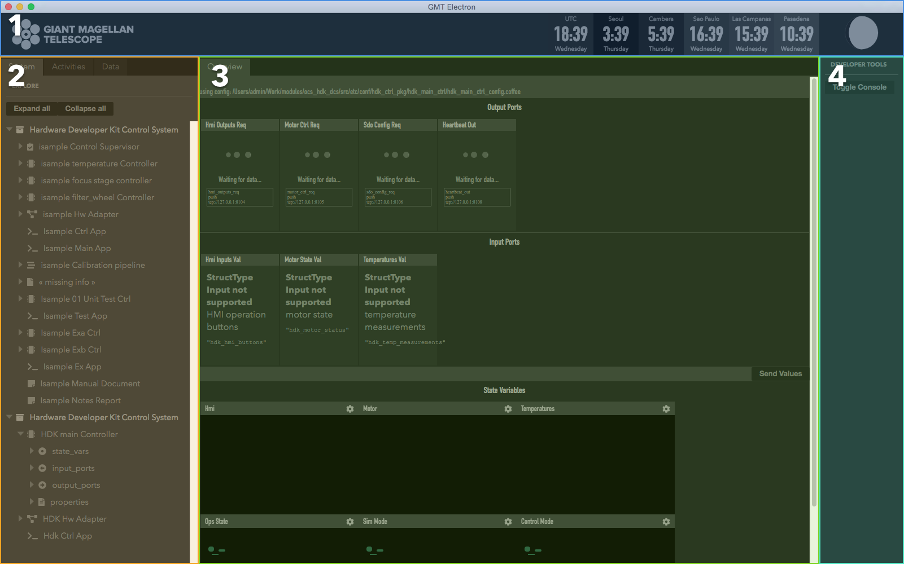

12. UI Framework¶
Note
The UI framework is currently only supported on MacOS. Linux support will be available in future releases.
The UI Framework introduces a set of libraries and a windowed application that provides a GUI for the OCS. The framework handles three primary concerns
- Rendering (drawing) elements to the screen (DOM)
- Library of re-usable UI components that can be shared across the project
- An App that provides an interface to the OCS
12.1. Engineering App¶
The engineering application provides a GUI to the OCS model. It is launched via the command line and it will spawn an OS window that renders the UI.
The UI engineering app uses your local bundles from $GMT_LOCAL/etc/bundles and allows you to see a visual representation of your model files’ input/output ports. For now, the Engineering app needs to run in MacOS or a Linux Desktop.
To launch the application, run this in the command line
$ navigator
This will launch the GUI as a child process of the CLI application. To stop the GUI, stop the CLI app with CTRL + C.
12.2. Configuration¶
The User Interface needs to be configured to connect to the correct control components to receive data. Without proper configuration, the application may look like this:
Edit the appropriate config files in the src/etc/conf folder to point to the correct IP address for input and output ports. For example,
$ cd $GMT_LOCAL/modules/ocs_hdk_dcs/src/etc/conf/hdk_ctrl_pkg/hdk_main_ctrl/
$ sed -i '' "s/172.0.0.1/172.16.10.31/g" hdk_main_ctrl_config.coffee
See the Troubleshooting section below for more help with connection issues.
Restart the Navigator application for changes to take affect.
12.3. User Guide¶
The navigator application contains four regions.
- Header The header contains timezone information, as well as a moon cycle representation.
- Navigation This area contains the navigation tree. The tree is a representation of your model and is built from information found in your local bundles.
- Context Items selected in the tree will display here. Currently, it will display a representation of your model’s input/output ports and state variables.
- Developer tools This area is reserved for developer tools. The Toggle Console button will show the developer console.
Note
The Context area will optimistically render your model. Not all model data can be currently rendered. Some items like properties and detailed port views are currently not supported.
Warning
Input ports are rendered as data inputs based on the type data encoded in your model. The StructType input is not yet supported. When you press the Send Value button the app will attempt send the data in all the input fields to each respective port defined.
12.4. Launching Custom Panels¶
The navigator application can also launch custom panels that are defined in a DCS’ *_vis_pkg folders. When defined, it’s possible to launch standalone panels with the following parameters
$ navigator --panel emf_custom_weather_view --port 9098
The --panel flag specifies an exported panel in some vis package. The --port flag is currently required to avoid port collisions (for now).
The engineering app reserves port 9199. Custom panel launches of the application need to specify a different port for each instance.
Note
When running a custom panel, only the Header and Context regions will be shown. The panel content is rendered in the Context region.
12.5. Creating Custom Panels¶
The following tutorial uses the HDK module to step through the process of creating a simple, and then a more complex custom UI panel. In some cases, the files and folders created in the tutorial already exist in the repository.
12.5.1. Updating the model¶
The UI Framework needs to notified of the existence of custom UI panels when loading the model. This is currently achieved by adding a panel definition in the model and rebuilding it with webpack.
To create a custom UI panel to load in the UI, a vis package is required. We’ll first register this package in the model, then export the code that will be run by the UI framework.
$ cd $GMT_LOCAL/modules/ocs_hdk_dcs/model
$ mkdir hdk_vis_pkg
$ touch hdk_custom_view.coffee
Edit hdk_custom_view.coffee, and add the following code
Panel "hdk_custom_view",
info: 'Example view for HDK'
Now edit $GMT_LOCAL/modules/ocs_hdk_dcs/model/hdk_dcs_def.coffee with following
module.exports =
elements:
hdk_ctrl_pkg:
# Leave unchanged.
# Add this
hdk_vis_pkg:
elements:
hdk_custom_view: { language: ['coffee'], build: 'obj', deploy: 'dist', codegen: false, active: true}
Finally edit $GMT_LOCAL/modules/ocs_hdk_dcs/model/hdk_dcs_ld.coffee to require the new vis package coffee file.
...
require './hdk_vis_pkg/hdk_custom_view'
module.exports = require './hdk_dcs_def'
This step is to register a vis package in the OCS model. This package is only visible after you rebuild your model with webpack and re-launch the navigator app.
Note
Future releases will make more use of these model definition files. For now a single Panel definition is required for the vis_pkg to become visible to the UI framework.
12.5.2. Simple ‘Hello World’ panel¶
Now that your vis package is visible to the model, you need to write some UI code.
$ cd $GMT_LOCAL/modules/ocs_hdk_dcs/src/coffee
$ mkdir hdk_vis_pkg
$ touch hdk_vis_pkg.coffee
The $GMT_LOCAL/modules/ocs_hdk_dcs/src/coffee/hdk_vis_pkg/hdk_vis_pkg.coffee file is imported by the Engineering application when you launch it with a --panel parameter. There is nothing in that file yet, so we’ll first create a ‘Hello World’ example.
$ cd $GMT_LOCAL/modules/ocs_hdk_dcs/src/coffee/hdk_vis_pkg
$ touch hello.coffee
Now edit the hello.coffee and add the following
import { Panel } from 'ocs_ui_fwk/ui'
View = () =>
<Panel>
Hello World!
</Panel>
export default View
That effectively renders a ‘Hello World’ message in a UI panel. This is still not visible the the Engineering app, for that you’ll need to export that View in the hdk_vis_pkg.coffee file
Edit $GMT_LOCAL/modules/ocs_hdk_dcs/src/coffee/hdk_vis_pkg/hdk_vis_pkg.coffee
Note
When you export default modules, the name you use to import does not matter. This is why the declared View can be exported as View and imported as HelloWorld.
import HelloWorld from './hello'
views = [
nav: 'hdk_dcs/hdk_hello_world_view'
type: 'hdk_hello_world_view'
Component: HelloWorld
]
export default views
Note
The type key is used by the navigator app to locate your exported View. The --panel parameter in the cli app needs to be the same as the type value. The nav key provides a navigation tree hint that for the general engineering app. This way your panel is exposed both as a custom panel, and is also read by the engineering app.
It should now be possible to see this view by running the --panel flag on the navigator cli app.
$ navigator --panel hdk_hello_world_view --port 9197
12.5.3. Complex panel¶
That example is to get your feet wet, but you’ll want to render more complex views of your components. The UI framework provides an abstraction that parallels the step function of your components. This abstraction provides the data you expose through your output ports and state var values, and provides a way to send values to input ports and state var goals.
First, let’s create the Step rendering function. We will create a step function for the hdk_main_ctrl model. The data that the step render function exposes comes from the hdk_main_ctrl.coffee model.
$ cd $GMT_LOCAL/modules/ocs_hdk_dcs/src/coffee/hdk_vis_pkg
$ touch hdk_main_ctrl_step.coffee
Now edit hdk_main_ctrl_step.coffee, and add the following boilerplate code. Note that if you decide to create a step render function for another component you’ll need to edit only a few lines of boilerplate. Mainly the config path and the component name.
import { Store } from 'ocs_ui_fwk/ui'
config = require '../../etc/conf/hdk_ctrl_pkg/hdk_main_ctrl/hdk_main_ctrl_config'
dcs = 'hdk_dcs'
component = 'hdk_main_ctrl'
# Default options
options =
type: "@#{dcs.toUpperCase()}/#{component.toUpperCase()}"
key: "#{dcs}/#{component}"
# Initialize ports to start data streams
Store.initPorts config, options
# Create step function view renderer
Step =
Render: Store.renderStep config, options
export default Step
This creates the step render function, but you’ll need to write a separate view to render that content.
Note
This loads the configuration file that’s usually auto-generated when you build your model. The configuration needs to have accessible url definitions. In some cases that means having opened firewall ports when you’re component is running on a separate machine. The navigator app reads those url’s to receive and render data.
To open a firewall port in Fedora, you can run sudo firewall-cmd --add-port=8122-8124/tcp where 8122-8124 is a port range you want to open.
The Step.Render function maps the model declared in hdk_main_ctrl to a renderable View. The function exposes input_ports, output_ports and state_vars declared in the model. Note that a combination of the hdk_main_ctrl_config and hdk_main_ctrl model is used to generate this function. To see an example of this in use, we’ll need to create a separate view.
In this example, we’ll visualize the digital outputs to the control lights. This is the hmi_outputs in the hdk_main_ctrl model. hmi_outputs is defined as an output port of type hdk_hmi_leds. In the DCS types, the hdk_hmi_leds type is a StructType.
Note
The hmi_outputs url needs to be an accessible TCP port. In most cases, you should define the URL explicity as the IP address of the machine. So url: 'tcp://127.0.0.1:8104' should be url: 'tcp://10.20.10.12:8104' when your machine’s IP is 10.20.10.12. Additionally, the navigator app can only subscribe to pub protocols, so your port should be set to protocol: 'pub'. Reading telemetry from other protocols is planned for a future release.
$ cd $GMT_LOCAL/modules/ocs_hdk_dcs/src/coffee/hdk_vis_pkg
$ touch hdk_main_ctrl_view.coffee
Now edit hdk_main_ctrl_view.coffee with the following boilerplate:
import { Panel, Widget, Box } from 'ocs_ui_fwk/ui'
import HDKMain from './hdk_main_ctrl_step'
View = () =>
<Panel>
<HDKMain.Render>
{({state_vars}) =>
#...rendered views go here
<Panel>This is rendered from the HDKMain.Render step function</Panel>
}
</HDKMain.Render>
</Panel>
export default View
In the above example, you get a Render function from the imported hdk_main_ctrl_step that we declared earlier. The Render function gives you state_vars as an input, and expects a renderable View as an output. The state_vars map directly to the model, so we can expect the hmi data to be included as part of the state_vars data. For example, if we wanted to get the value of the pilot light, we can use the safe access operator state_vars?.hmi?.output?.pilot to retrieve that value.
<HDKMain.Render>
{({state_vars}) =>
#...rendered views go here
<Panel>
<Box>Pilot light</Box>
<Box>
{state_vars?.hmi?.output?.pilot.toString()}
</Box>
</Panel>
}
</HDKMain.Render>
Note
We use the Coffeescript existential operator ? so that we don’t access undefined values and crash. This may be the case when there are errors in your model, or the data streams are not available to the UI.
You won’t be able to load this panel until you export it in hdk_vis_pkg.coffee
import HelloWorld from './hello'
import HDKMainView from './hdk_main_ctrl_view'
export default [
nav: 'hdk_dcs/hdk_hello_world_view'
type: 'hdk_hello_world_view'
Component: HelloWorld
,
nav: 'hdk_dcs/hdk_main_ctrl_view'
type: 'hdk_main_ctrl_view'
Component: HDKMainView
]
You can now run it with the --panel flag on the navigator cli app, with the type.
$ navigator --panel hdk_main_ctrl_view --port 9198
Warning
The navigator app allows you to run instances of multiple panels at the same time. However, you will need to specify a different --port for each instance to avoid port collision errors. Also, note that the navigator app will reuse the internal data server for multiple instances, so if you close the initial instance, the data server may become unavailable for the other panels.
You should now see true or false string rendered on the screen indicating the pilot light status. But the UI can render more than strings. A more extensive example that shows the status of the motor and LED lights can be found in the HDK vis package https://github.com/GMTO/ocs_hdk_dcs.
12.6. Troubleshooting Guide¶
The engineering app loads the local bundles defined in $GMT_LOCAL/etc/bundles. It currently uses the model generated config files to read data for your package. Those config files are created in $GMT_LOCAL/modules/<your_module>/src/etc/conf/<your_package>_pkg/<component>_config.coffee; it’s useful to see what’s in those configs when troubleshooting data availability issues. The availability of data to the UI largely depends on those config files. The values generated will depend on how you write your model, but a sample of a config file might look like
module.exports = properties: uri: { name: 'uri', default_value: 'gmt://hdk_dcs/hdk_main_ctrl/hdk_main_ctrl' , type: 'String', desc: 'Uri path for the component' } # other fields ommited state_vars: hmi: { name: 'hmi', } motor: { name: 'motor', } input_ports: hmi_goal: { name: 'hmi_goal', protocol: 'pull', url: 'tcp://127.0.0.1:8116', blocking_mode: 'async', max_rate: 1000, nom_rate: 1 } motor_goal: { name: 'motor_goal', protocol: 'pull', url: 'tcp://172.16.10.31:8117', blocking_mode: 'async', max_rate: 1000, nom_rate: 1 } output_ports: hmi_value: { name: 'hmi_value', protocol: 'pub', url: 'tcp://127.0.0.1:8122', blocking_mode: 'async', max_rate: 1000, nom_rate: 1 } motor_value: { name: 'motor_value', protocol: 'pub', url: 'tcp://172.16.10.31:8123', blocking_mode: 'async', max_rate: 1000, nom_rate: 1 }
When troubleshooting it’s important to note the protocol and the url keys for a given port. For example the hmi_value.url value is tcp://127.0.0.1:8122 this means you’re trying to connect to port number 8122 on the address 127.0.0.1 (which is typically your local machine). Whereas the motor_value.url is trying to connect to a different computer with an IP address 172.16.10.31 on port number 8123.
If the computer at 172.16.10.31 is firewalled and not allowing connections to port 8123, you will not be able to see data. You will need to allow incoming connections to that port. Likewise, if your component is running at the computer at 172.16.10.31 and you are trying to read data from 127.0.0.1, you will not see any data. You will need to change the IP to match the computer where your component is running.
Additionally, the UI can only read data from ports configured with the pub protocol.
If you make changes to the config file, you will need to restart the command line app; you can do this by pressing CTRL + C.
MacOS - nvm command not found: If, after installing nvm, the command
nvm installfails with the message,command not found, check the~/.bash_profilefile to ensure that it contains a command for loading nvm. The .bash_profile file should contain the following lines:export NVM_DIR="$HOME/.nvm" [ -s "$NVM_DIR/nvm.sh" ] && \. "$NVM_DIR/nvm.sh" # This loads nvm
Unresponsive UI: in some case if the UI becomes unresponsive, press
CMD+Rto refresh. If that fails to solve the problem, restart the CLI app. You can stop the CLI app withCTRL+C.No navigation tree: the navigation tree is rendered off the local bundles in
$GMT_LOCAL\etc\bundles. The bundles described there need to have been built with webpack.No data: Ensure that the ports used by the controllers to publish data are accessible through the firewall. The following command should be used on the Device Control Computer to open the applicable range of ports (8122 - 8124):
$ sudo firewall-cmd --add-port=8122-8124/tcp